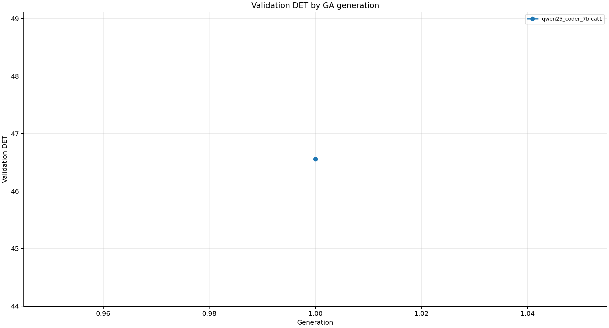
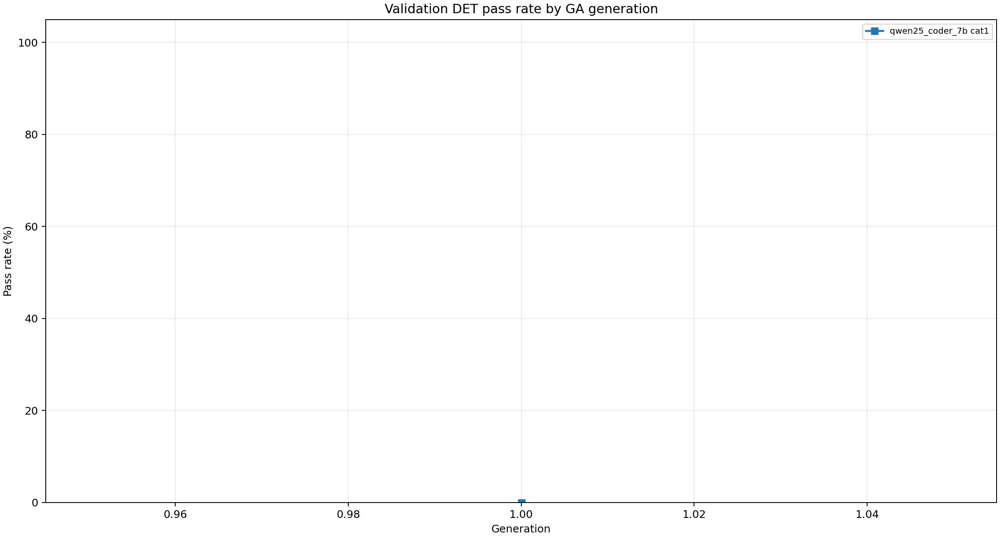
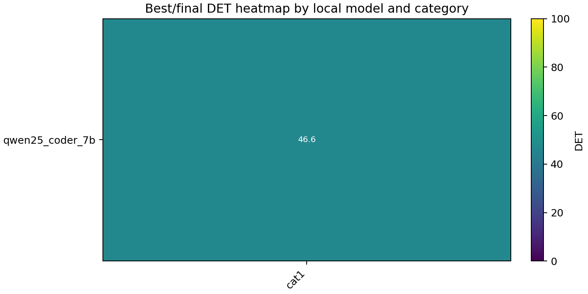
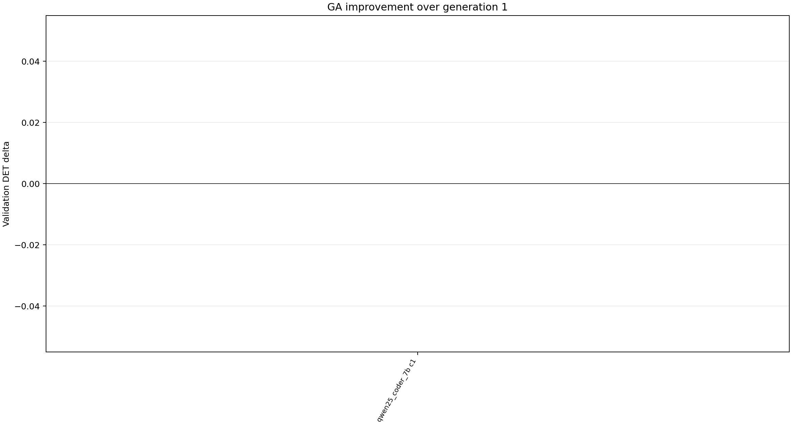
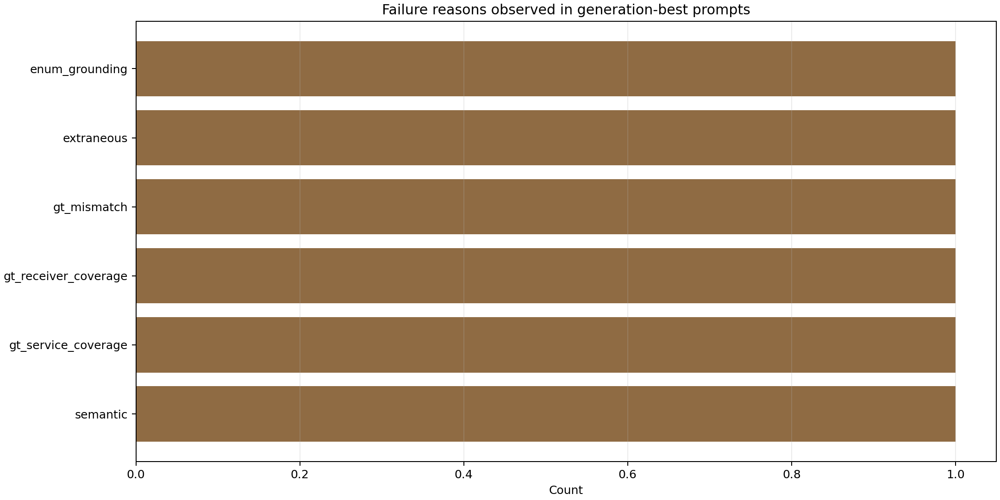

Best Results
| model | cat | rows | best gen | gen1 DET | best valid DET | delta | final DET | final pass | GT exact | run dir |
|---|---|---|---|---|---|---|---|---|---|---|
| qwen25_coder_7b | cat1 | 1 | 1 | 46.5556 | 46.5556 | +0.0000 | 46.5556 | 0.00% | 0.00% | /home/mgjeong/Desktop/llm/JOILang-Server/gpt_mg/version0_15_update20260413/results/local_prompt_ga_mock_smoke2/runs/qwen25_coder_7b/cat1 |
Validation Det By Generation

Validation Pass Rate By Generation

Best Det Heatmap

Improvement Vs Generation1

Failure Reason Counts
